Бонус №1
Методичка по расшифровке анализов
Готовая шпаргалка: какие показатели смотреть, как читать их вместе и как отслеживать динамику.
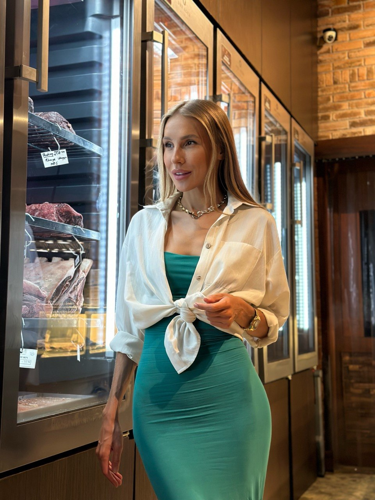
Интенсив
За 2 дня раскрою полную схему, как поднять ферритин на 30–50 единиц за 1 месяц.
Только база и то, что действительно работает.
ПРИНЯТЬ УЧАСТИЕ ЗА 1 000 ₽ →Ты сдаёшь анализы — и снова видишь:
НИЗКИЙ ФЕРРИТИН
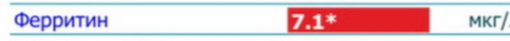
Проходит время…
А показатели почти не меняются или после отмены снова снижаются.
И возникает один вопрос:
«Я вроде бы всё делаю правильно. Почему ничего не получается?»
У двух женщин может быть одинаково низкий ферритин.
Но причины — совершенно разные.
А иногда одновременно присутствует сразу несколько факторов.
Поэтому одинаковый ферритин у двух женщин ещё не означает одинаковую причину дефицита.
А значит, и подход к коррекции не может быть одинаковым.
Именно этому посвящён интенсив.
Не просто вопросу:
«Какой препарат железа купить?»
А гораздо более важному:
«Почему железо не восстанавливается именно у меня?»ХОЧУ РАЗОБРАТЬСЯ В СВОЕЙ СИТУАЦИИ →
Результат клиентов
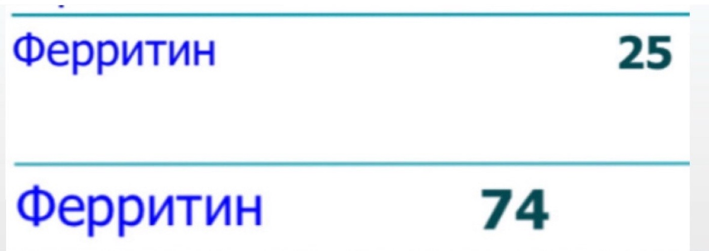
Но самое важное в этом кейсе — не сама цифра.
До начала работы у девушки была сильная усталость.
Ей регулярно приходилось спать днём, потому что просто не хватало энергии.
Сильно выпадали волосы, появилась заметная залысина.
Была выраженная отёчность, изменилось тело.
Но вместе с анализами изменилось и состояние.
Тело: до и после
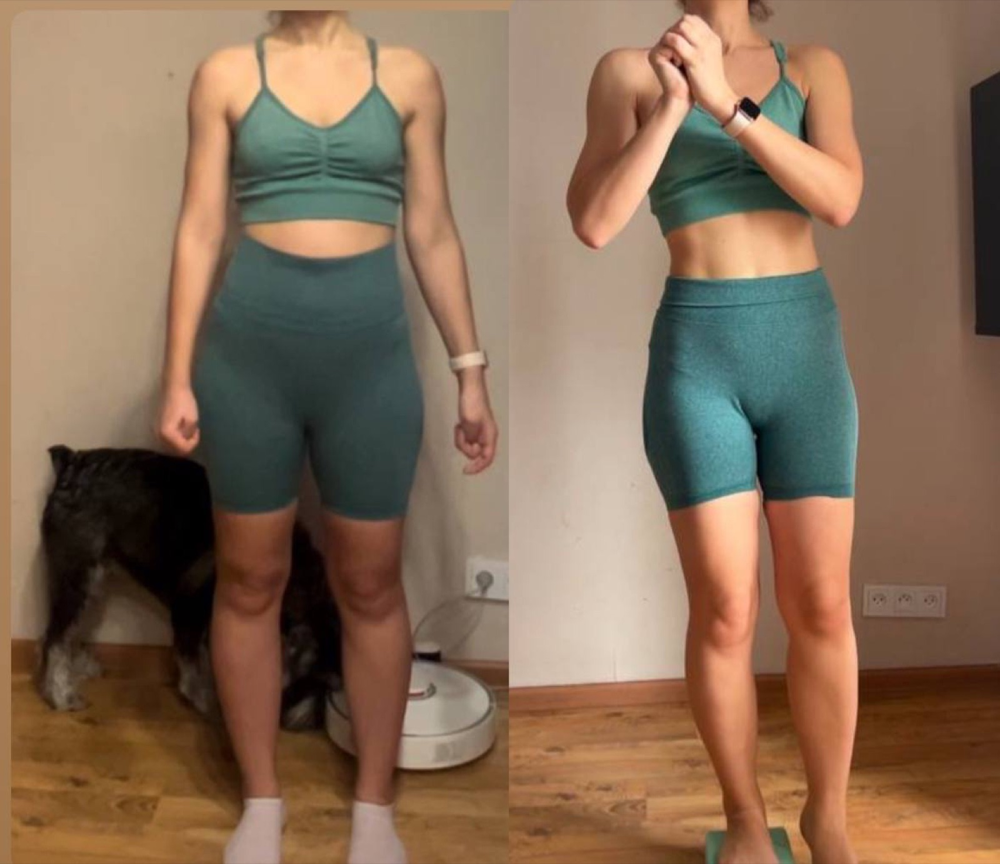
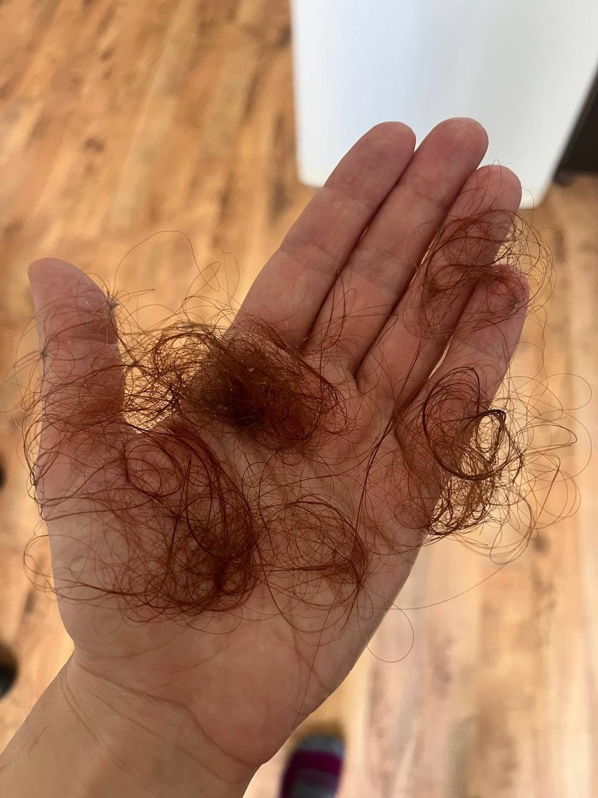
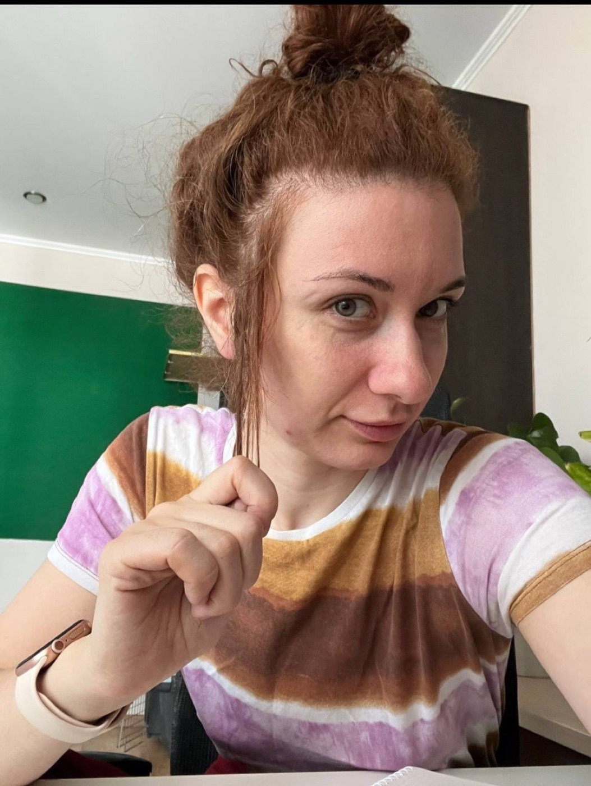
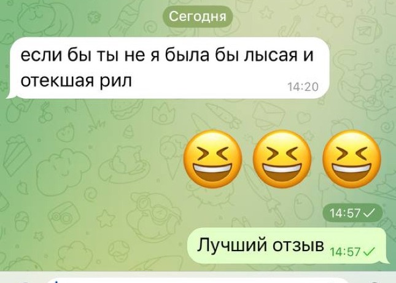
И вот ради чего мы корректируем дефицит железа.
Не ради красивой цифры в бланке анализа.
А ради состояния, когда у тебя снова есть силы:
просыпаться, работать, заниматься собой, строить планы и жить, а не ждать момента, когда наконец можно будет лечь.
ХОЧУ ТАК ЖЕ РАЗОБРАТЬСЯ В СВОЕЙ СИТУАЦИИ →2 дня — сразу к практике
Я не буду часами рассказывать физиологию ради физиологии.
Мы берём только то, что реально необходимо, чтобы:
Никакой воды.
Только база и то, что можно применять.
День 1
С первого занятия — сразу практика.
Мы будем работать с анализами и учиться видеть в них не просто цифры, а общую картину твоего состояния.
Я научу читать анализы, определять не только дефицит железа, но и сопутствующие дефициты, которые могут привести к низкому ферритину.
А также мы разберём ключевые причины дефицита — почему твой ферритин не растёт и почему он не поднимается только препаратами железа.
То есть мы посмотрим:
анализы + симптомы + питание + ЖКТ + менструальный цикл + реакции на предыдущую коррекцию.
День 2
Если первый день отвечает на вопрос:
«Почему это происходит?»
то второй:
«Что с этим делать?»
На втором дне мы соберём твою систему коррекции.
Ты поймёшь, как выстроить полноценный рацион, который помогает закрывать потребности организма в железе, белке и других важных нутриентах.
Не жёсткое меню.
Не необходимость каждый день есть одни и те же продукты.
А принцип, по которому ты сможешь самостоятельно собирать нормальный рацион из привычной еды.
Разберёмся, как сделать так, чтобы железо нормально усваивалось, и почему иногда недостаточно просто добавить продукты или препараты.
Ты поймёшь, какие факторы со стороны ЖКТ могут мешать коррекции и когда есть смысл искать причину глубже.
Разберём логику применения препаратов железа.
Какие варианты существуют.
Почему один подход может работать, а другой — нет.
Какие ошибки могут снижать эффективность коррекции.
Как оценивать результат.
И как понимать, когда текущая схема действительно работает, а когда нужно разбираться дальше вместе с врачом.
Результат клиентов
Она уже делала то, что обычно рекомендуют при низком ферритине:
принимала препараты железа.
Но динамика была практически незаметной:
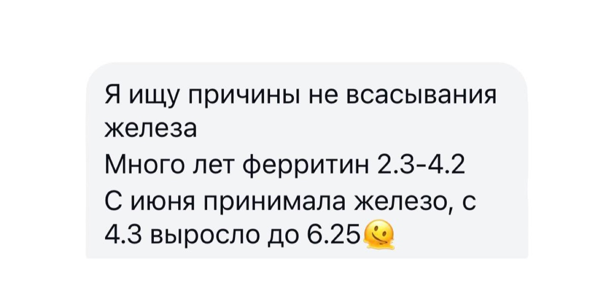
В такой ситуации очень легко решить:
И продолжать делать одно и то же.
Но если железо практически не растёт — важно понять, ПОЧЕМУ.
После того как мы разобрали ситуацию и изменили подход:
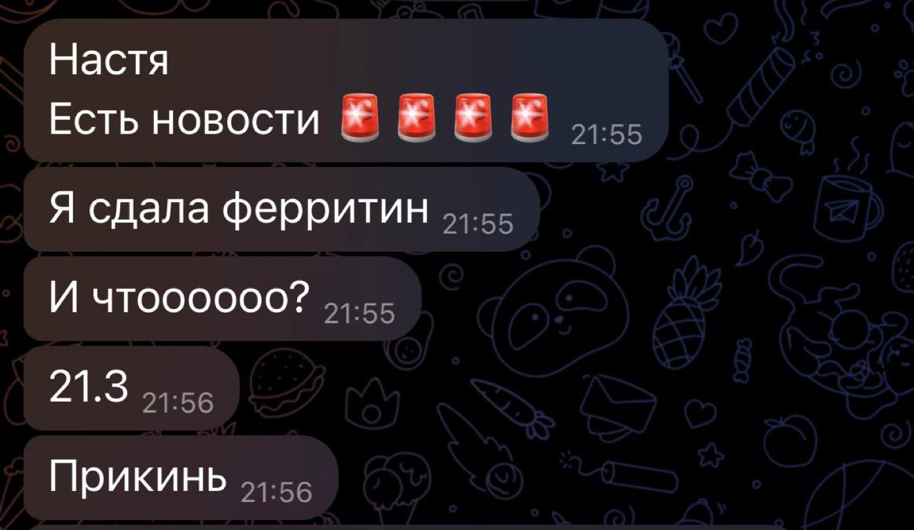
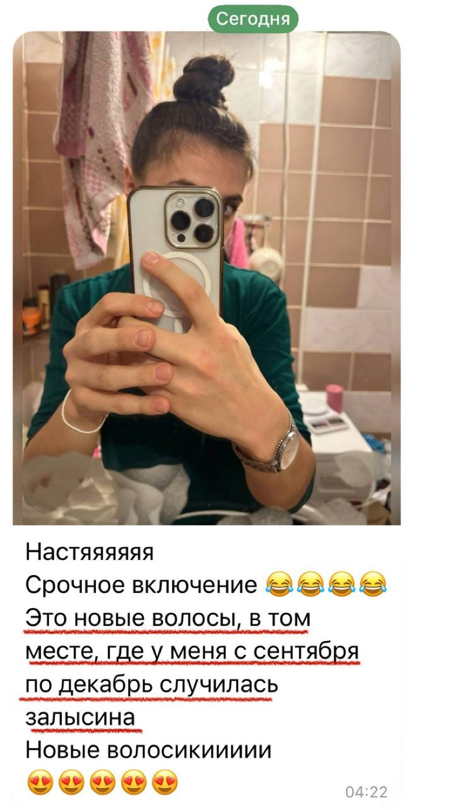
Именно поэтому мы не начинаем с вопроса:
«Какую банку купить?»
Мы начинаем с вопроса:
«Что мешает восстановлению именно в моём случае?»
Не просто знания.
А понятный маршрут дальнейших действий.
ХОЧУ НА ИНТЕНСИВ →И постепенно возвращается то состояние, ради которого всё это вообще делается:
Потому что конечная цель — не просто изменить цифру ферритина.
А вернуть качество жизни.
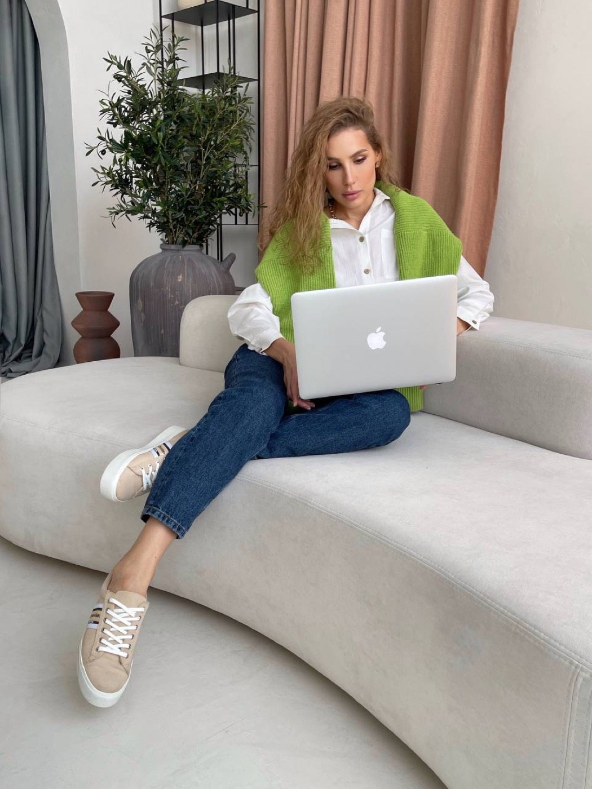
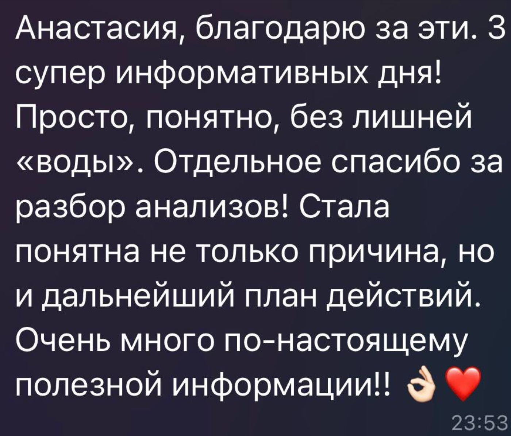
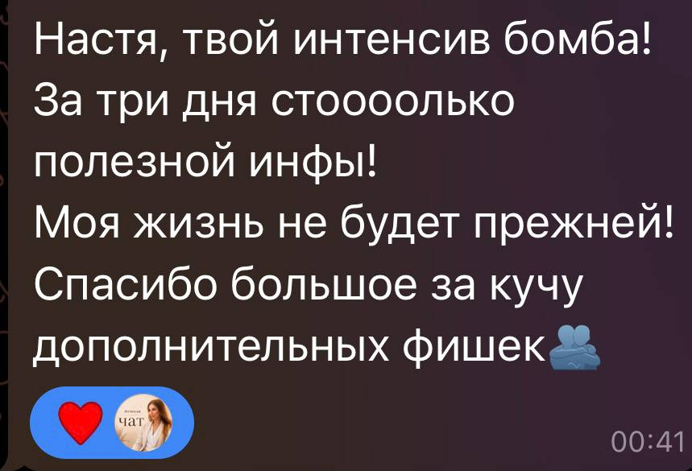
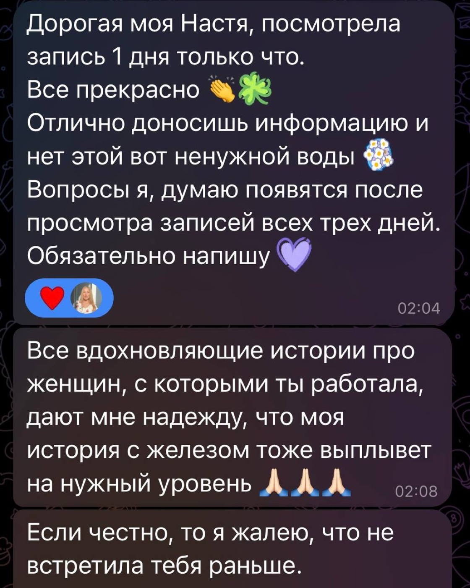
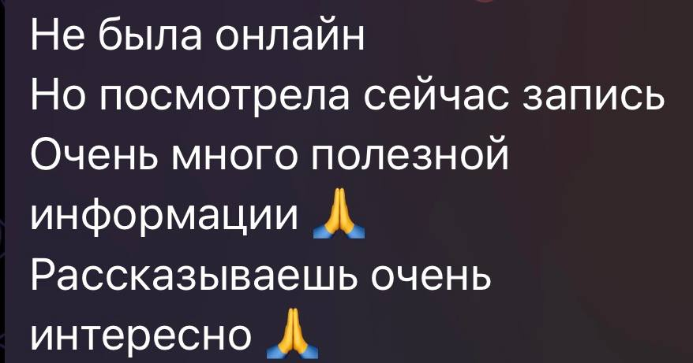
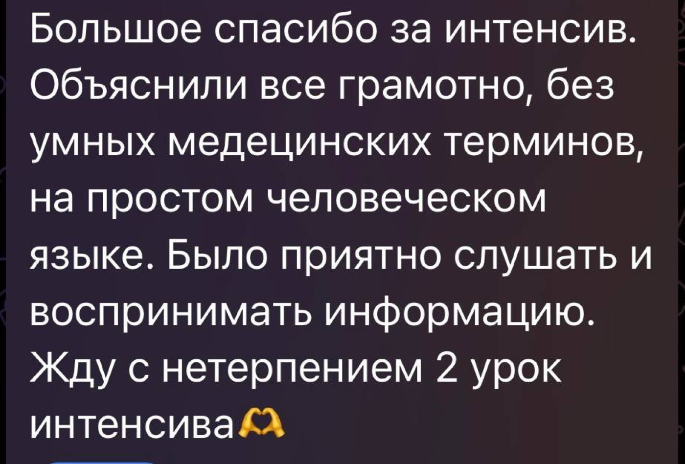
Готовая шпаргалка: какие показатели смотреть, как читать их вместе и как отслеживать динамику.
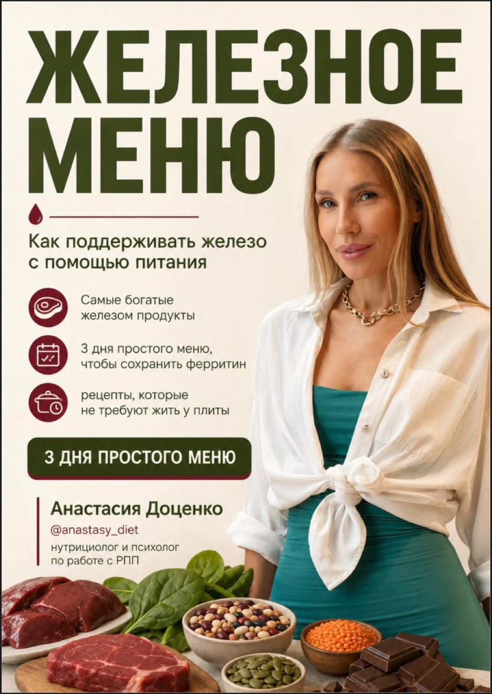
Продукты, готовые сочетания и простая система, по которой ты сможешь самостоятельно собирать рацион при дефиците железа.
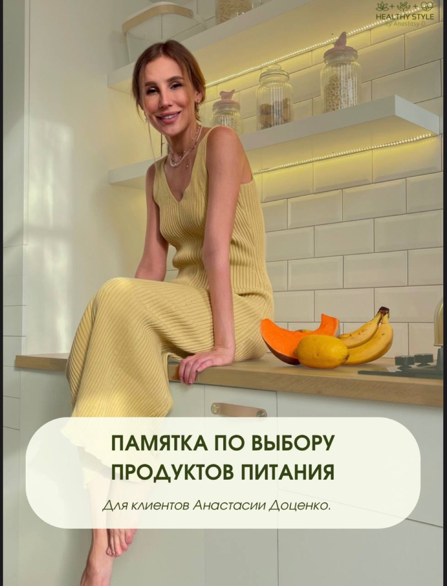
Моя методичка по выбору продуктов для полноценного рациона: что покупать, на что смотреть в составе и чем заменять привычные продукты.
Ты сможешь пересматривать материалы и возвращаться к ним во время своей коррекции.
Всё это — за 1 000 ₽
7–8 ноября
1 000 ₽
ПРИНЯТЬ УЧАСТИЕ ЗА 1 000 ₽ →После окончания интенсива запись будет продаваться отдельно за 3 000 ₽.
«Я уже принимала железо»
Именно поэтому на интенсиве мы ищем не только способ поднять показатель. Мы разбираемся, почему он может плохо расти или снова снижаться после отмены.
«У меня нормальный гемоглобин»
Гемоглобин — только часть общей картины. Важно смотреть ситуацию комплексно.
«Я и так правильно питаюсь»
Даже полноценный рацион не всегда решает проблему, если железо плохо усваивается или организм регулярно его теряет.
«У меня нет проблем с ЖКТ»
Не все факторы, влияющие на усвоение, обязательно проявляются сильной болью или выраженными симптомами.
«Я уже сдала кучу анализов»
Тем более. На интенсиве мы разберёмся, что из этого действительно имеет значение и что делать с полученной информацией.
Обо мне
Нутрициолог
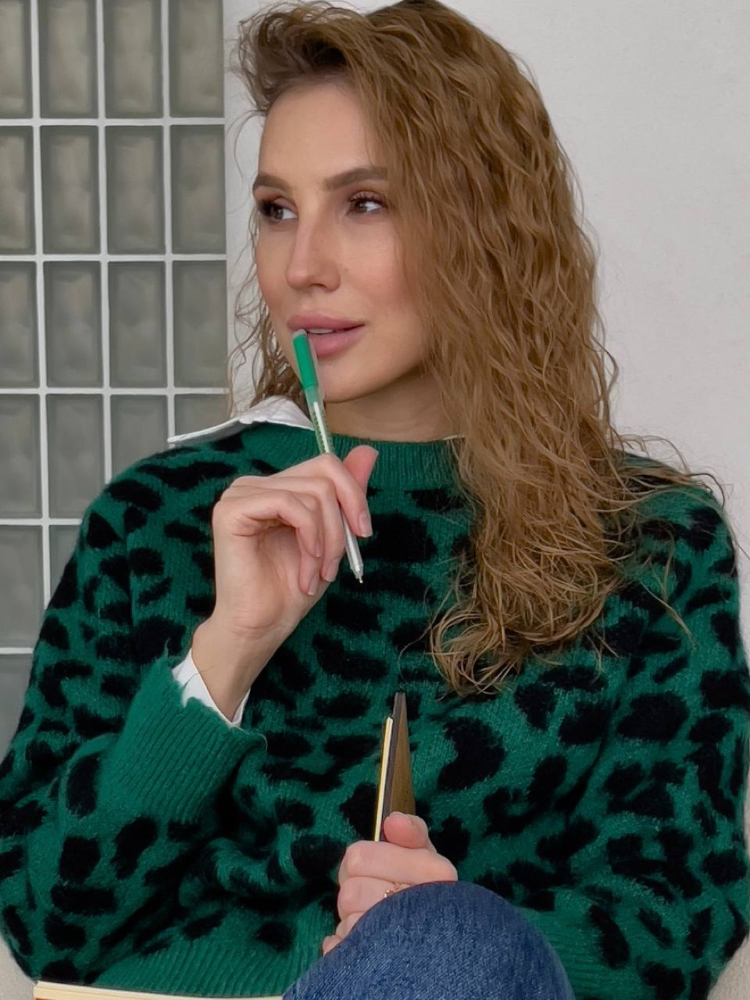
Я работаю с женщинами, которые хотят разобраться с питанием и дефицитными состояниями не через бесконечный список банок, а через понимание причин и последовательную коррекцию.
Я регулярно вижу одну и ту же ситуацию:
Но никто так и не объяснил ей, ПОЧЕМУ это происходит.
Моя задача — не просто дать очередной список рекомендаций.
Я хочу, чтобы после работы со мной ты понимала:
Чтобы ты перестала действовать вслепую.
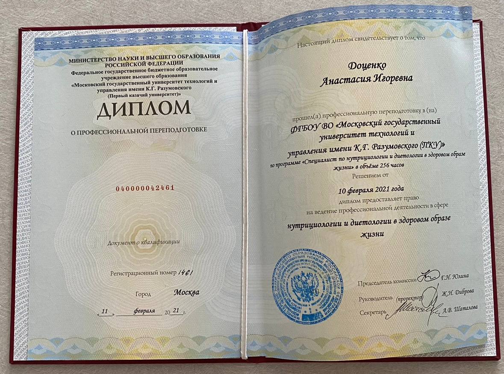
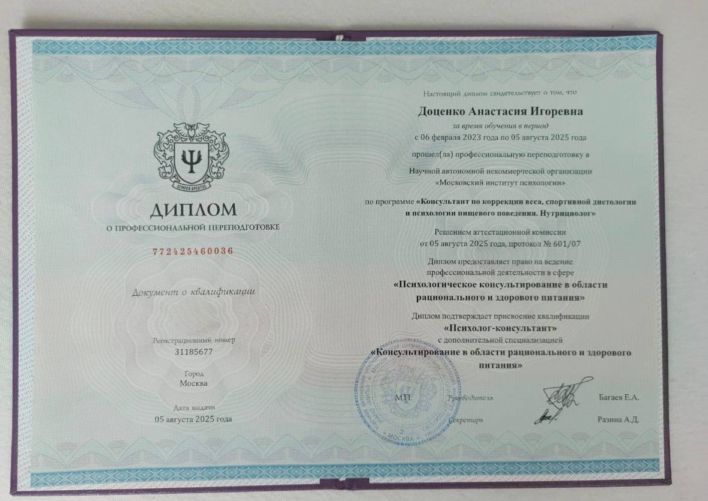
Важно
На интенсиве мы разбираем питание, анализы, возможные причины дефицита и общую логику дальнейших действий.
При выраженной анемии, значительном снижении гемоглобина, беременности, подозрении на кровотечение, тяжёлых хронических заболеваниях или резком ухудшении самочувствия необходима консультация врача.
Наша задача — не заниматься самолечением.
А помочь тебе понимать свою ситуацию и принимать более осознанные решения вместе со специалистами.
И снова через несколько месяцев задавать себе вопрос:
«Почему я опять здесь?»
А можно за 2 дня разобраться:
Железодефицит
Практический интенсив Анастасии Доценко
7–8 ноября
Участие в интенсиве
1 000 ₽
В стоимость входят:
После интенсива запись будет продаваться отдельно за 3 000 ₽.
Имя, почта, телефон и оплата — на защищённой странице Bizon365. Доступ придёт автоматически после оплаты.